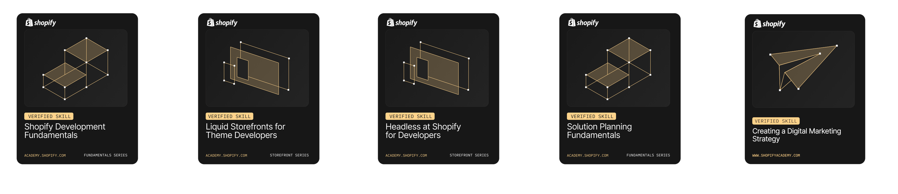

#!/eleanor -s cassady
Senior Software Engineer ✦ Solutions Architect ✦Technical Leader
cassadyeleanor@gmail.com
✦ 971-271-3723
linkedin.com/in/eleanor-cassady-37084220b
Professional Summary
Eleanor brings significant value to any prospective employer. She is both an effective team player and a capable leader, known for her persistence and adaptability. She approaches new challenges with focus and determination, consistently seeing projects through to completion regardless of obstacles. With extensive experience across a wide range of technologies and disciplines—from traditional LAMP stacks to modern frameworks—she offers a strong balance of technical expertise and interpersonal skills.
Core Competencies & Technical Expertise
Shopify Custom App Development, Liquid, Shopify, APIs Function Development
Ecommerce Solutions: Data Migration, Post-Order Flow Enhancements, Feature development and maintenance
Engineering Leadership: Team Management, Project Scoping, Technical Architecture, Agile Delivery
Tech Stack: Linux, MySQL, Postres, GraphQL, REST, nGinx, Git, HTML, CSS, JavaScript, Python, Ruby, PHP, Perl
Web development frameworks: Django, Ruby on Rails, Laravel Drupal, React
Modernization: Refactoring Legacy Systems, CMS Consolidation, Infrastructure Scaling
Professional Highlights
Senior Software Engineer
Sunny Road / Chelsea + Rachel Co ✦ 2021 – 2025
Buillt and maintaining Shopify Plus themes with Liquid, JavaScript, CSS and HTML
Custom App development and third-party integrationx
Designed interactive Shopify storefront features with JavaScript & GraphQL.
Authoring tools anddata migrations tools from other ecommerce platforms into Shopify.
Built automation an Continuous deployment/integration systemS
Software Engineer
Dr. Jay's ✦ 2017
Used problem-solving skills to enhance and modernize site features using Perl, JavaScript, HTML, and CSS
Upated LatEX assets and enhancing asset management pipeline
Manager of Software Engineering
Fonality / NetFortris ✦2012 — 2014
Co-led a 12-member team modernizing a multi-million-line legacy codebase.
Directed initiatives to automate and enhance billing, tax processing, and warehouse provisioning.
Championed best practices in testing, CI/CD, and scalable design.
Software Engineer
TrafficEngine ✦ 2011
Maintained and enhanced features for high-traffic, high-throughput ad sales platforms
Created granular scheduling tools for traffic allocation in Perl and C
Software Develoment Lead
CyberQuad Solutions ✦ 2008-2011
Developed payment processing and live video chat solutions with PHP, Java, JavaScript, HTML, and CSS, Ruby on Rails
Developed automated parsing and publication of SEC filings for
Lead Software Developer
AVN Media Network ✦ 2007
Platform migration from a suite of publication CMS solutions
Development of site features in Perl, ActionScript, Javascript, CSS and HTML
Developed asset management systems
Senior Developer and Project Lead
Tri-tech Internet Services ✦ 2001 – 2007
Development and maintance company websites using Perl, PHP, MySQL, C, JavaScript, HTML and CSS
Developed and maintained payment pipeline and least-cost-routing for company
Development and maintenance of alternative payment systems and microloan products
Developed social and real-stakes online poker systems
Shopify Certifications
T estimonials
Ellie quickly became our go-to Senior Engineer for the most complex Shopify builds. She led migrations, custom integrations, and technical challenges most engineers would shy away from
Zackary Lewis, COO, Chelsea & Rachel Co.
“Ellie is one of the best engineers I’ve ever worked with. APIs? Middleware? Buggy third-party apps? No problem. She scopes projects with precision and solves problems others avoid
Verona Gillespie, VP of Strategy, Chelsea and Rachel Co.
Demo/Portfolio